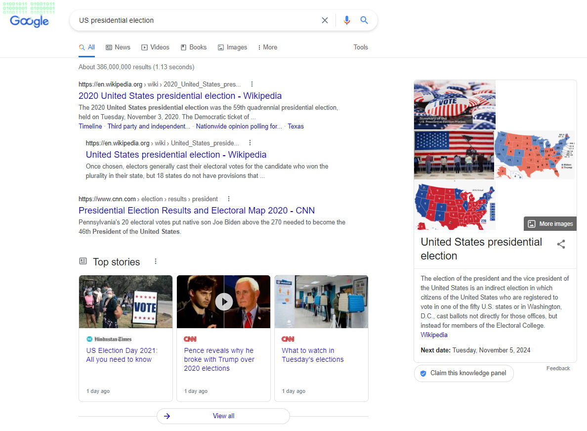
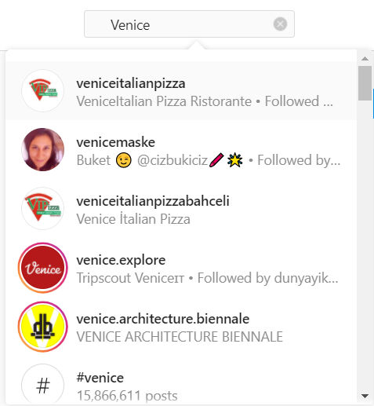
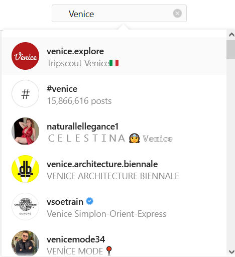
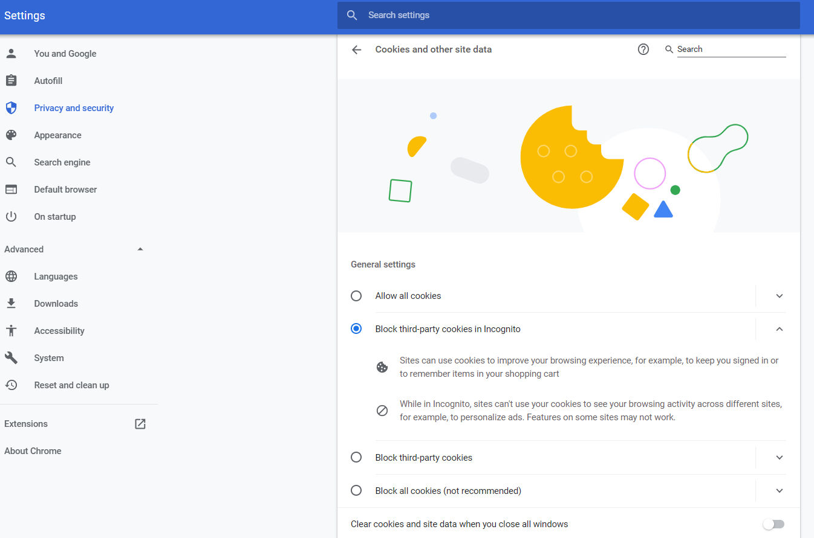
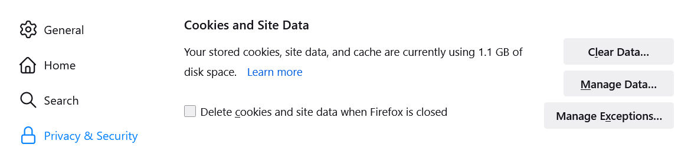
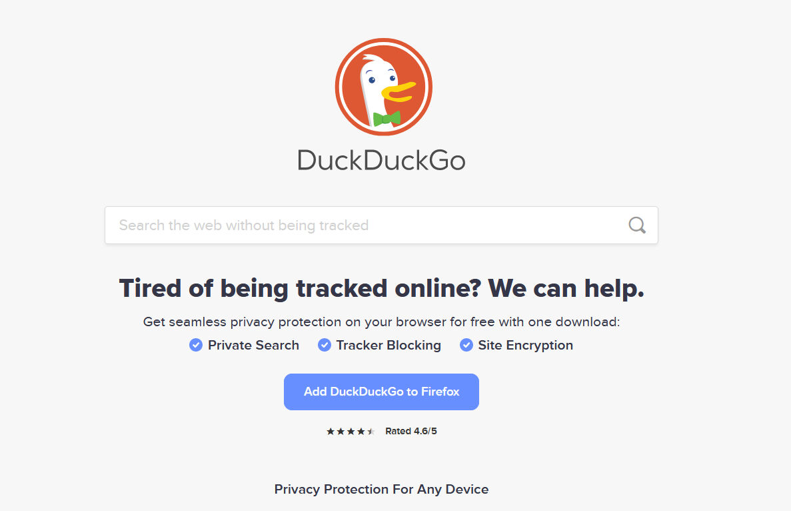

Trainees Edition
Trainers Edition
Trainees Edition
Trainers Edition
15. nodarbība: Filtru pārvaldība
Nodarbības apraksts
Nodarbības pamatmērķis ir izskaidrot, kā pārvaldīt filtrus un ko var darīt, lai no tiem izvairītos.
Papildus mērķis ir sniegt atbalstu pasniedzējiem, kuri vēlas izmantot nodarbības saturu, lai mācītu savus studentus.
Ar šiem mērķiem tiek prezentēti filtru pārvaldība un norādījumi par mācību priekšmeta izklāstu.
Studenti, kuri sekmīgi pabeigs šo moduli, varēs:
- saprast, kas ir personalizācija un tās veidi;
- izprast personalizācijas un filtrēšanas ietekmi;
- saprast, ko lietotāji var darīt, lai izvairītos no filtru burbuļiem;
- saprast, ko platformas var darīt, lai izvairītos no filtru burbuļiem;
Turklāt pasniedzēji, kuri veiksmīgi pabeigs šo nodarbību, gūs izpratni par to, kā mācīt pārvaldīt filtrus un ko var darīt, lai izvairītos no filtru burbuļiem.
Nodarbības struktūra
Nodarbība sastāv no sekojošām daļām:
- Mērķis, satura apraksts un mācību rezultāti
- Nodarbības struktūra
- Vadlīnijas studentiem
- Vadlīnijas pasniedzējiem (kā sagatavoties, izmantotās metodes un padomi)
- Saturs (mācību materiāli un vingrinājumi)
- Tests
- Resursi (izmantotie informācijas avoti un ieteicamie avoti un video)
Nodarbības galvenie uzdevumi, satura izklāsts un mācību rezultāti ir izskaidroti nodarbības apraksta daļā. Vadlīnijas studentiem ietver norādījumus un ieteikumus. Vadlīnijas pasniedzējiem vada pasniedzējus caur dažādiem apmācības posmiem un sniedz padomus, kas varētu būt noderīgi mācību priekšmeta mācīšanai. Saturs ietver visus mācību materiālus un ar saturu saistītos vingrinājumus. Testā ir iekļauti jautājumi ar atbilžu variantiem un apgalvojumiem, par kuriem jāatzīmē, vai tie ir pareizi vai nepareizi, lai pārbaudītu apgūto. Resursiem ir divas sadaļas: izmantotie informācijas avoti un ieteicamie avoti turpmākai lasīšanai un izpētei. Izmantotie avoti ir satura daļā citēto avotu saraksts. Ieteicamie avoti sastāv no papildu avotu un videoklipu saraksta, kurus ļoti ieteicams lasīt un skatīties, lai uzzinātu vairāk par šo tēmu.
Vadlīnijas studentiem
Studentiem ir jāizlasa teksts, jānoskatās ieteicamie video un jāveic vingrinājumi. Papildinformāciju viņi var meklēt ieteiktajos avotos. Pēc iepazīšanās ar saturu studentiem ir ļoti ieteicams aizpildīt testu, lai novērtētu savu progresu. Ja nepieciešams, viņi var pārskatīt mācību materiālu.
Vadlīnijas pasniedzējiem
Vadlīnijas pasniedzējiem ietver ieteikumus un padomus par to, kā izmantot šīs nodarbības saturu, lai apmācītu cilvēkus par šo tēmu.
Sagatavošanās
Ir ļoti ieteicams sagatavot prezentāciju (PowerPoint/Prezi/Canva), kas ir papildināta ar vizuāliem materiāliem (attēli un videoklipi) un skaidriem, pārliecinošiem piemēriem. Tāpat ieteicams pielāgot nodarbības piemērus un vingrinājumus jautājumiem, kas ir vairāk pazīstami faktiskajai mērķa grupai. Vietējo piemēru izvēle (konkrētā valstī) saistībā ar pašreizējām vai labi zināmām problēmām palīdz skaidrāk ilustrēt jautājumu. Tas arī palīdz radīt studentu interesi. Jo pazīstamāki un populārāki ir piemēri, jo labāk tiks nodots vēstījums.
Darba uzsākšana
Sākumā var noderēt īss tests (3 līdz 5 jautājumi), izmantojot Kahoot vai Mentimeter platformas, lai iesaistītu dalībniekus tēmā. To var izmantot kā motivācijas rīku, kā arī rīku, lai pārbaudītu apmācāmo esošās zināšanas par mācību priekšmetu. Daži jautājumu piemēri varētu būt šādi: Kas ir personalizācija? Kā personalizācija var ietekmēt lietotājus?
Ieteicamās metodes
Apmācību laikā var kombinēt dažādas mācību metodes. Piemēram:
- Lekciju lasīšana
- Diskusija
- Grupu darbs
- Pašrefleksija
Padomi pasniedzējiem
Iesildīšanās
Efektīvs veids, kā iesaistīt dalībniekus un nospraust kopīgus mērķus mācībām, ir uzdot dažus sākuma jautājumus par šo tēmu. To var izdarīt, izmantojot grupu darbu, aicinot studentus apspriest un apkopot idejas, kā arī individuāli, lūdzot katram dalībniekam uzrakstīt savas idejas uz līmlapiņām. Pasākumu var veikt šādi:
- Jautājiet studentiem:
-
vai viņi veic personalizāciju izmantotajās platformas (piemēram, Google, Facebook, YouTube utt.);
-
vai viņi zina par algoritmu personalizēšanu viņu izmantotajās platformās (piemēram, Google, Facebook, YouTube utt.)
- vai viņi paši kaut ko dara, lai izvairītos no personalizācijas, ko lieto viņu izmantoto platformu algoritmi;
- vai viņi apzinās, ka atrodas filtra burbuļu vai atbalss kameru ietekmē.
-
Nodarbības mērķa prezentēšana
Nodarbības mērķis (tas ir, kā pārvaldīt filtrus un ko var darīt, lai no tiem izvairītos ir skaidri jānorāda. Pēc iesildīšanās jautājumiem būs vieglāk noskaidrot nodarbības mērķus.
Nodarbības satura izklāsts
Prezentējot saturu, noteikti esiet interaktīvā komunikācijā ar studentiem un mudiniet viņus aktīvi piedalīties.
- Pēc personalizācijas un tās veidu izskaidrošanas pajautājiet dalībniekiem, vai viņiem ir zināma personalizācija.
- Pieminot dažādos meklēšanas rīku rezultātus vienai un tai pašai meklēšanai, pamatojiet savu apgalvojumu ar meklēšanas piemēriem, ja iespējams, ar dažādām personām un dažādās vietās (valstīs).
- Izskaidrojiet līdzīga satura avotu izmantošanas ietekmi, meklējot ziņas vai informāciju par jebkuru tēmu, saistot tos ar filtru burbuļiem un atbalss kamerām.
- Uzsveriet, kāpēc ir svarīgi apzināties personalizāciju un filtrēšanu. Runājiet par to nozīmi gan indivīdam, gan demokrātiskai sabiedrībai.
Noslēgums
Izveidojiet īsu nodarbības kopsavilkumu un uzdodiet dažus jautājumus, lai uzsvērtu galveno domu.
Var palīdzēt šādi jautājumi:
- Pajautājiet praktikantiem, ko lietotāji var darīt, lai izvairītos no filtru burbuļiem.
- Pajautājiet praktikantiem, ko platformas var darīt, lai izvairītos no filtru burbuļiem.
Nodarbības beigās pārliecinieties, ka apmācāmie saprot personalizācijas un filtrēšanas ietekmi.
Saturs: filtru pārvaldība
Ievads
Kas ir algoritmi, kā tie darbojas, to plusi un mīnusi, to ietekme, to saistība ar ziņu plūsmām un detalizēta informācija par filtru burbuļiem un atbalss kamerām ir izskaidroti 6. nodarbībā. Šajā nodarbībā galvenā uzmanība ir pievērsta tam, kas jādara, lai izvairītos no algoritmos izmantotajiem filtriem.
Mūsdienās mēs galvenokārt esam atkarīgi no algoritmiskās personalizācijas un ieteikumiem (piemēram, Google personalizētajiem rezultātiem un Facebook ziņu plūsmai, kas mūsu vietā izlemj, kurš redz atjauninājumus) (Pariser, 2011a). Izmantotie algoritmi veic šīs izvēles, izmantojot platformu savāktos datus, pamatojoties uz mūsu iepriekšējo lietojumu, un datus, ko mēs brīvprātīgi sniedzam platformām (Fletcher, n.d.). Šajā brīdī ir vērts pieminēt atšķirību starp paša izvēlētu personalizāciju un iepriekš atlasītu personalizāciju.
Pašu izvēlēta personalizācija attiecas uz personalizāciju, ko mēs veicam brīvprātīgi, un šāda personalizācija ir īpaši svarīga, ja runa ir par ziņu izmantošanu. Cilvēki vienmēr pieņem dažādus lēmumus, lai personalizētu savu ziņu izmantošanu (piemēram, kādus laikrakstus pirkt, kādus TV kanālus skatīties un no kuriem izvairīties). Šo situāciju sauc arī par “selektīvo ietekmi”, un to ietekmē dažādas lietas, piemēram, cilvēku interese par ziņām, viņu politiskā pārliecība utt. (Fletcher, n.d.).
No otras puses, iepriekš atlasītā personalizācija ir personalizācija, kas tiek veikta cilvēkiem, dažreiz izmantojot algoritmus un dažreiz bez viņu ziņas. Tas ir tieši saistīts ar filtru burbuļiem, jo algoritmi izdara izvēli cilvēku vārdā, bet cilvēki var to neapzināties (Fletcher, n.d.).
Daudziem lietotājiem meklēšanas rezultātu personalizēšana ir noderīga un ērta. No otras puses, daudzi lietotāji jūtas neērti par to, ka vietnes, kuras viņi izmanto, veido spēki, kurus viņi nevar kontrolēt (Ensor, 2017). Būtībā, koncentrējoties uz tāda satura nodrošināšanu un patēriņu, kas ir cieši saskaņots ar jūsu vēlmēm, var izveidoties burbulis vai kamera, kas ierobežo jūsu skatījumu. (Ensor, 2017).
Cilvēki izmanto meklētājprogrammas, lai piekļūtu ziņām un, lai atrastu konkrētas ziņas. Tomēr, meklējot konkrētu tēmu, var gadīties, ka meklētājprogrammas izmanto algoritmisku atlasi, pamatojoties uz datiem, kas savākti par jūsu iepriekšējiem lietojumiem. Tātad, kad cilvēki izmanto meklētājprogrammas, pastāv iespēja, ka algoritmiskā atlase viņus paturēs filtra burbulī (Fletcher, n.d.). 2011. gadā tika paziņots, ka Google piedāvā personalizētus rezultātus, aplūkojot 57 dažādus signālus (no lietotāju atrašanās vietas līdz kāda veida pārlūkprogrammu viņi izmanto) (Pariser, 2011a). Mūsdienās tiek apgalvots, ka, lemjot par Google sarakstā iekļaujamo rezultātu atbilstības līmeni, tiek ņemti vērā vairāk nekā 200 faktori (Dean, 2021). Tomēr nav pilnīgi skaidrs, kādu citu algoritmu Google izmanto.
Personalizācijas ietekme uz Google ir parādīta tālāk minētajos piemēros. Pirmais piemērs ir reģistrēts lietotājs no Turcijas. Otrais ir no anonīma lietotāja Turcijā. Pēdējais ir no anonīma lietotāja ASV.
Avots: Google Search for “US presidential election” with logged-in from Turkey
Avots: Google Search for “US presidential election” with anonymous from Turkey

Avots: Google Search for “US presidential election” with anonymous from the USA
Savukārt, sociālo mediju platformās bieži tiek apvienota paša izvēlēta personalizācija ar iepriekš izvēlētu personalizāciju. Tomēr ir zināmas arī lietotāju preferences attiecībā uz to, kurām ziņu organizācijām viņi seko vai nē. No otras puses, algoritmi var arī slēpt ziņas no cilvēkiem, kas viņus neinteresē, vai no platformām, kas viņiem īpaši nepatīk (Fletcher, n.d.).
Personalizācijas ietekme pakalpojumā Instagram ir parādīta tālāk sniegtajos piemēros. Pirmais piemērs ir reģistrēts lietotājs no Turcijas, bet otrais ir no anonīma lietotāja no Turcijas.

Avots: Instagram Search for “Venice” with logged-in from Turkey

Avots: Instagram Search for “Venice” with anonymous from Turkey
Lielākā daļa platformu nesniedz pārskatāmu informāciju par to algoritmiem, kas darbojas fonā. Tiek norādīts, ka meklētājprogrammu, sociālo tīklu platformu un citu lielāko tiešsaistes starpnieku algoritmi samazina informācijas daudzveidību, kurai indivīdi var piekļūt caur filtru burbuļiem un izmantot to dažādiem mērķiem, kas var radīt lielus draudus demokrātijai (Bozda? & van den Hoven, 2015, 249.lpp.) Izmantoto filtru necaurspīdīgums ierobežo izvēles brīvību, un, pateicoties daudzajiem datiem, kas iegūti analizējot lietotāju informatīvo uzvedību, indivīdi tiek klasificēti dažādās kategorijās, kas nav skaidri noteiktas. No otras puses, iedzīvotājiem ir jāapzinās dažādi viedokļi un iespējas, lai viņi varētu izvērtēt un pieņemt saprātīgus lēmumus. Tomēr algoritmi izlemj lietotāju vietā, kādam saturam viņiem ir jāpiekļūst.
Kā mēs varam izvairīties no filtru burbuļiem?
Vienīgais veids, kā pilnībā atbrīvoties no filtru burbuļiem, ir pārtraukt Google, citu sociālo mediju platformu un ziņu platformu izmantošanu (Ensor, 2017). Tomēr tas nav pārāk reāls risinājums. Lai gan nav iespējams pilnībā izvairīties no algoritmiem un filtru burbuļiem, un atbalss kamerām, kas ir to atspoguļojums.
Ko lietotāji var darīt?
1. Ziņu ievākšana no dažādiem avotiem, neaprobežojoties ar vienu vai nedaudziem:
Atbalss kameras pastāvēja pirms Google un Facebook. Piemēram, avīzes jau gadiem sniedz savu ziņu versiju. To var redzēt no atšķirībām interpretācijās, ko laikraksti un ziņu platformas sniedz par pasaulē notiekošo (Ensor, 2017). Sekošana ziņu vietnēm, kuru mērķis ir piedāvāt plašu skatījumu, var novērst to, ka saņemat ierobežotu informāciju. Neatkarīgi no avotiem, ko mēs bieži izmantojam, ātrs ieskats resursu pirmajās lapās sniegs priekšstatu par jebkādām novirzēm (Farnam Street, n.d.). Visefektīvāk izvairīties no tādu platformu kā Google filtru burbuļa, ir pārzinot situāciju. Ja meklējat svarīgu informāciju, mēģiniet izmantot vairākus avotus un objektīvi aplūkot situāciju (Ensor, 2017).
Nav viegli atmest ieradumus, mainīt ziņu avotus, kas tiek bieži pārbaudīti katru dienu, vai pievienot jaunus. Tomēr, ik pa laikam dažādojot savu ceļu tiešsaistē, ievērojami palielinās izredzes satikt jaunas idejas un cilvēkus (Pariser, 2011b, 122.lpp.).
Var teikt, ka filtru burbuļi izraisa vai nodrošina sociālo segregāciju politikā, ka cilvēku pakļaušana saturam par alternatīvām politiskajām perspektīvām mazinās politisko ekstrēmismu, un tas ir ārkārtīgi svarīgi, risinot polarizācijas problēmu (Stray, 2012). Tieksme pēc patiesības ir vissvarīgākais aspekts, lai pārvarētu filtru burbuļus. Ikvienam ir ārkārtīgi svarīgi, lai katrs daudzpusīgi izskatītu jautājumus un izmantotu daudzus avotus, tādējādi novēršot jebkuru apdraudējumu demokrātijai (Allred, 2018).
2. Lai dzēstu vai bloķētu pārlūkprogrammas sīkfailus:
Daudzas vietnes ievieto “sīkfailus” (mazus teksta failus) katru reizi, kad mēs tās apmeklējam. Pēc tam šīs sīkdatnes tiek izmantotas, lai noteiktu, kāds saturs mums tiek rādīts. Regulāra sīkfailu dzēšana, ko jūsu interneta pārlūkprogramma izmanto, lai identificētu jūs, ir daļējs risinājums (Farnam Street, n.d.; Pariser, 2011b, 122.lpp.).

Chrome — Iestatījumi — Konfidencialitāte un drošība — Sīkfaili un citi vietņu dati

Firefox — Iestatījumi — Privātums un drošība — Sīkfaili un vietņu dati
Sīkdatnes var dzēst manuāli (atlasiet “Iestatījumi”, pēc tam sadaļā “Privātums un drošība” atlasiet dzēst sīkfailus). Ir arī pārlūkprogrammas paplašinājumi, kas noņem sīkfailus (Farnam Street, n.d.).
Papildu sīkfailu un meklēšanas/pārlūkprogrammas vēstures dzēšanai varat arī veikt nepieciešamās darbības tiešsaistē, nepiesakoties savos kontos (piemēram, nepiesakoties Gmail) (Farnam Street, n.d.; Pariser, 2011b, 122.lpp.) .
Turklāt visas tiešsaistes darbības varat veikt inkognito logā, kurā tiek glabāts mazāk jūsu personiskās informācijas. Tomēr tas nešķiet garantēts veids, jo lielākā daļa pakalpojumu nedarbosies tā, kā vajadzētu (Pariser, 2011b, 122.lpp.). Privātā pārlūkošana darbojas, ļaujot veikt meklēšanu inkognito logā, nesaglabājot paroles, sīkfailus un pārlūkošanas vēsturi. Tomēr tas neslēpj jūsu identitāti vai tiešsaistes aktivitātes. Vietnes un interneta pakalpojumu sniedzēji var apkopot informāciju par jūsu apmeklējumu pat tad, ja neesat reģistrējies (“Common myths about private”, n.d.; Google Chrome help, 2021). Piesakoties kādā no savām iecienītākajām Facebook, Amazon, Gmail un līdzīgām vietnēm inkognito režīmā, jūsu darbības vairs nebūs anonīmas vai īslaicīgas. Lai gan sīkfaili un izsekošanas dati tiek dzēsti, kad beidzas jūsu privātā sesija, tos joprojām var izmantot, kamēr sesija ir aktīva, savienojot jūsu darbības starp dažādiem kontiem un profiliem. Šādā gadījumā, piemēram, ja esat pieteicies Facebook, Facebook var redzēt, ko jūs darāt citās vietnēs, un attiecīgi pielāgot savas reklāmas pat inkognito režīmā. Tas pats attiecas uz Google (Nield, 2020). Tas neļauj jums būt pilnīgi brīvam. Tā kā filtra burbulis nav raksturīgs tikai personiskām tiešsaistes darbībām, tajā tiek ņemti vērā arī tādi personīgi faktori kā ierīce un atrašanās vieta (Ensor, 2017).
Citas pieejas, lai samazinātu jebkādu izsekošanu līdz minimumam, ir izvēlēties uz privātumu vērstu pārlūkprogrammu, izvēlēties vietnes, kas lietotājiem sniedz lielāku kontroli un pārskatāmību par to, kā darbojas viņu filtri un kā viņi izmanto personisko informāciju, izmantojot meklētājprogrammas, kas neiegūst jūsu datus (piemēram, kā DuckDuckGo, StartPage) vai uzticamas VPN (virtuālā privātā tīkla) programmas instalēšana (Nield, 2020; Pariser, 2011b, 122.lpp.).

Avors: DuckDuckGo Search
3. Reklāmu bloķējošo pārlūkprogrammas paplašinājumu izmantošana:
Šie paplašinājumi noņem lielāko daļu reklāmu no mūsu apmeklētajām vietnēm. Tomēr lielākā daļa vietņu paļaujas uz ieņēmumiem no reklāmām, lai atbalstītu savu darbu. Dažas vietnes pieprasa lietotājiem atspējot reklāmu bloķētājus pirms lapas skatīšanas. Šīs ir reklāmas bloķējošo pārlūkprogrammu paplašinājumu nelabvēlīgās puses (Farnam Street, n.d.).
4. Programmatūras izmantošana filtra burbuļa pārvarēšanai:
Izmantojot lietotnes vai pārlūkprogrammas paplašinājumus, piemēram, Escape Your Bubble (Chrome paplašinājums), Read Across The Aisle (Chrome paplašinājums), PolitEcho (Chrome paplašinājums), var arī palīdzēt izvairīties no filtru burbuļiem.
5. Apmācība:
Viena no lielākajām filtru burbuļu problēmām ir tā, ka lielākā daļa cilvēku pat nezina, kas ir filtru burbuļi. Personas, kuras to nezina, nevarēs veikt nepieciešamos pasākumus, lai izmeklētu patiesību, jo viņi var neapzināties, ka viņu rezultāti ir personalizēti. Tāpēc indivīdu izpratnes palielināšana par filtru burbuļiem un to, kā ar mums manipulē, informācijas patērēšana no dažādām uzticamām vietnēm, dažādu viedokļu meklēšana apmācībā palīdzēs samazināt filtru burbuļu negatīvo ietekmi (Allred, 2018). Jānodrošina, lai personas iemācītos veikt izvērsto meklēšanu, izmantojot meklēšanas palīgus savos meklējumos Google vai citos resursos (Cisek & Krakowska, 2018). Tāpēc ir ārkārtīgi svarīgi, lai indivīdi apgūtu informācijpratību un ziņu pratības prasmes.
No otras puses, kļūst svarīgi arī attīstīt algoritmisko pratību pamata līmenī. Arvien biežāk pilsoņiem būs jāpieņem spriedumi par algoritmiskām sistēmām, kas ietekmē mūsu sabiedrisko un valsts dzīvi. Pat ja viņi nepārvalda pietiekami tekoši, lai lasītu tūkstošiem koda rindu, ir noderīgi apgūt pamatus (piemēram, kā manipulēt ar mainīgajiem, cilpām un atmiņu), kā šīs sistēmas darbojas un kur tās var pieļaut kļūdas (Pariser, 2011b, 124.lpp.).
Mūsu kā indivīdu, citiem vārdiem sakot, lietotāju uzvedības maiņa ir daļa no filtra burbuļu novēršanas procesa. Tomēr ar to vien nepietiek. Platformām, kas attīsta personalizāciju, ir jāņem vērā arī daži aspekti. (Pariser, 2011b, 125.lpp.).
Ko var darīt platformas?
Cīņā pret filtru burbuļiem, pirmkārt, sociālo mediju platformu un citu informācijas avotu veidotājiem jācenšas izveidot objektīvas tīmekļa vietnes un jāapzinās pilsoniskie pienākumi, ko viņi uzliek saviem algoritmiem (Allred, 2018).
Vēl viens svarīgs solis ir platformām mēģināt padarīt savas filtrēšanas sistēmas sabiedrībai pārredzamākas. Tādējādi var būt iespējama diskusija par to, kā viņi pilda sākotnējo uzdevumu. Pat ja nav iespējams panākt pilnīgu caurspīdīgumu, šīs platformas var skaidrāk parādīt, kā tās risina šķirošanas un filtrēšanas problēmas (Pariser, 2011b, 125.lpp.). Pārredzamība nav tikai sistēmas darbības publiskošana. Tas nozīmē, ka lietotāji intuitīvi saprot, kā sistēma darbojas. Tas ir nepieciešams priekšnoteikums, lai cilvēki varētu kontrolēt un izmantot šos rīkus, nevis pašiem tikt kontrolētiem un izmantotiem (Pariser, 2011b, 126.lpp.).
Platformām ir arī ārkārtīgi svarīgi izskaidrot, kā tās izmanto datus (piemēram, kuras informācijas daļas, kādā mērā un uz kāda pamata ir personalizētas), un būt šajā ziņā pārredzamām (Pariser, 2011b, 126.lpp.).
Runājot par mūsdienu lielo un ātro informācijas plūsmu, ir acīmredzams, ka ir jāizdara izvēle. Šeit rodas jautājums, kā izvēlēties, kāda informācija ikvienam būtu jāredz. Lai gan uz to nav skaidras atbildes, platformas var mēģināt piedāvāt dažādas iespējas, nevis izdarīt izvēli lietotāja vietā. (Stray, 2012).
Rezumējot, vissvarīgākais lietotāju uzdevums, lai izvairītos no filtru burbuļiem, ir apzināties filtru burbuļus un iegūt informāciju no dažādiem avotiem. Platformu svarīgākais uzdevums ir nodrošināt caurskatāmību par to izmantoto algoritmu darbības loģiku un informēt savus lietotājus par to, kādus datus viņi vāc un kādam nolūkam.
Vingrinājumi
1. vingrinājums
Pašizvēlēta personalizācija attiecas uz personalizāciju, ko veicam brīvprātīgi, un šāda veida personalizēšana ir īpaši svarīga, ja runa ir par ziņu izmantošanu. Iepriekš atlasītā personalizācija ir personalizācija, kas tiek veikta cilvēkiem, dažreiz izmantojot algoritmus un dažreiz bez viņu ziņas.
2. vingrinājums
Privātā pārlūkošana darbojas, ļaujot veikt meklēšanu inkognito logā, nesaglabājot paroles, sīkfailus un pārlūkošanas vēsturi. Tomēr tas neslēpj jūsu identitāti vai tiešsaistes aktivitātes.
Tests
Izmantotie informācijas avoti
Allred, K. (2018, April 13). The causes and effects of “filter bubbles” and how to break free. Medium.
Bozda?, E. & van den Hoven, J. (2015). Breaking the filter bubble: Democracy and design. Ethics and Information Technology, 17, 249-265.
Cisek, S. & Krakowska, M. (2018). The filter bubble: A perspective for information behaviour research. Paper presented at ISIC 2018 Conference.
Common myths about private browsing. (n.d.). Support Mozilla.
Dean, B. (2021, October 10). Google’s 200 ranking factors: The complete list (2021). Backlinko.
Ensor, S. (2017, August 18). How to escape Google's filter bubble. Search Engine Watch.
Farnam Street. (n.d.). How filter bubbles distort reality: Everything you need to know [Blog post].
Fletcher, R. (n.d.). The truth behind filter bubbles: Bursting some myths. Reuters Institute for the Study of Journalism.
Google Chrome help. (2021). Browse in private.
Nield, D. (2020, February 8). Incognito mode may not work the way you think it does. Wired.
Pariser, E. (2011a, March). Beware online “filter bubbles. TED Talks.
Pariser, E. (2011b). The filter bubble: What the Internet is hiding from you. The Penguin Press.
Stray, J. (2012, July 11). Are we stuck in filter bubbles? Here are five potential paths out. NiemanLab.
Ieteicamā literatūra
Lanier, J. (n.d.). Agents of alienation.
Piore, A. (2018, August 22). Technologists are trying to fix the “filter bubble” problem that tech helped create. MIT Technology Review.
Sunstein, C. (2007). Republic.com 2.0. Princeton University Press.
Ieteicamie video
Pariser, E. (2019, July). What obligation do social media platforms have to the greater good [Video]. TED Talks.